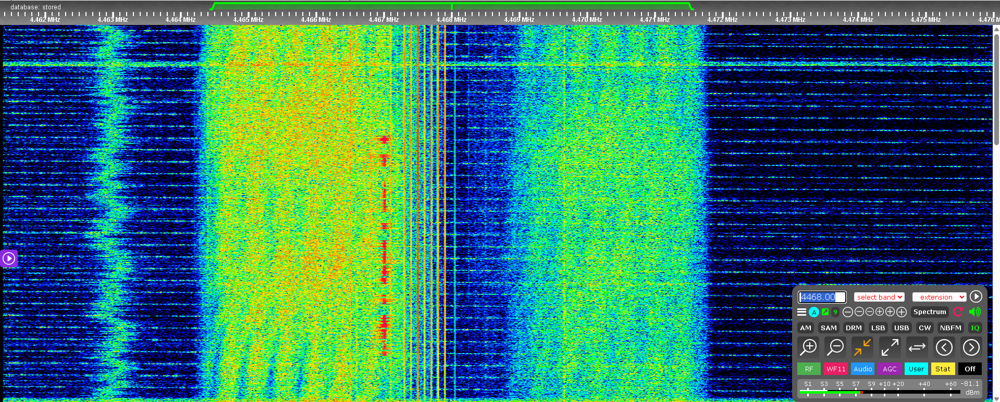

Click here to go back to the main page.
| Name: |
Slavic Call: S4468 Callsigns: Unidentified yet Signabroam ID: S4468 |
|---|---|
| Frequencies | 4468 kHz |
| Status | Active |
| Voice | Male, Female |
| Mode | DSB (USB and LSB at same time), Voices are stronger in USB otherwise the GroundLoop is stronger in LSB |
| Location | Russia or Belarus |
| Known counterpart stations | Unknown |
| Description |
S4468 is a unknown Russian station first heard in May 2026, its transmitting in DSB (which is rare) and mostly transmit Net Checks and DMT format messages. Callsign has not been identified yet, but we have records and we may identify it in the future. |
| Media |
 |